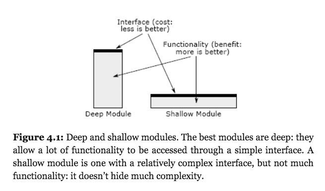

John Ousterhout é professor da Universidade de Stanford e criador da linguagem de script Tcl/Tk. Em 2018, ele lançou um livro sobre filosofia e princípios de projeto de software.
Neste livro, uma das principais recomendações – e, provavelmente, uma das mais originais, se comparada com o restante da literatura sobre projeto de software – é a seguinte: os módulos de um sistema devem ser profundos.
Vamos, primeiro, definir o que é um módulo. Basicamente, é qualquer elemento de código que tem uma implementação e uma interface. Assim, podemos ter módulos de diferentes tamanhos, incluindo funções, classes, subsistemas, pacotes, etc.
Mas voltando à recomendação de Ousterhout, um módulo é profundo (deep) quando sua implementação é bem mais complexa do que sua interface. Em outras palavras, módulos devem oferecer para seus clientes uma interface simples. Porém, por trás dessa interface, deve existir uma implementação complexa.
O contrário é um módulo raso, quando a interface é quase tão complexa quanto a própria implementação do módulo. Para ajudar a entender, vejas as seguintes ilustrações retiradas do livro:

Como exemplo de módulo profundo, o autor menciona o sistema de arquivos do Unix, cuja interface é composta por apenas cinco funções:
int open(const char* path, int flags, mode_t permissions);
ssize_t read(int fd, void* buffer, size_t count);
ssize_t write(int fd, const void* buffer, size_t count);
off_t lseek(int fd, off_t offset, int referencePosition);
int close(int fd);Ou seja, a implementação de um sistema de arquivos em um sistema operacional é bastante complexa, pois envolve lidar com uma variedade de dispositivos de hardware, criar estruturas para armazenar arquivos, gerenciar permisssões, permitir acesso concorrente a arquivos, manipular caches, etc. Porém, toda essa monstruosa complexidade fica escondida por trás de uma interface muito simples (as cinco funções mostradas acima). Inclusive, o autor comenta que a implementação de sistemas de arquivos no Unix evoluiu radicalmente ao longo dos anos, mas de forma invisível aos usuários, pois a assinatura das cinco funções de interface permaneceu inalterada.
O autor menciona um segundo exemplo de módulo profundo: coletores de lixo. Apesar de complexos, algoritmos de coleta de lixo são encapsulados em módulos que, basicamente, não possuem uma interface. Pelo menos uma interface visível à maioria dos programadores de linguagens como Go ou Java.
Por outro lado, a interface de um módulo raso (shallow) é relativamente complexa, quando comparada com a implementação do módulo. Como exemplo extremo, o autor menciona a seguinte função:
private void addNullValueForAttribute(String attribute) {
data.put(attribute, null);
}Para ele, é mais simples e fácil chamar diretamente:
data.put(attribute, null);do que criar uma função com apenas essa finalidade. Ou seja, a função addNullValueForAttribute adiciona complexidade ao sistema, mas sem proporcionar grandes benefícios.
No seu livro, Ousterhout lista uma série de red flags associados aos temas tratados em cada capítulo. Esses flags são sinais de que um código é mais complexo do que deveria. A discussão de módulos profundos e rasos termina então com o seguinte red flag:
A shallow module is one whose interface is complicated relative to the functionality it provides. Shallow modules don’t help much in the battle against complexity, because the benefit they provide (not having to learn about how they work internally) is negated by the cost of learning and using their interfaces. Small modules tend to be shallow.
Voltar para a lista de artigos.